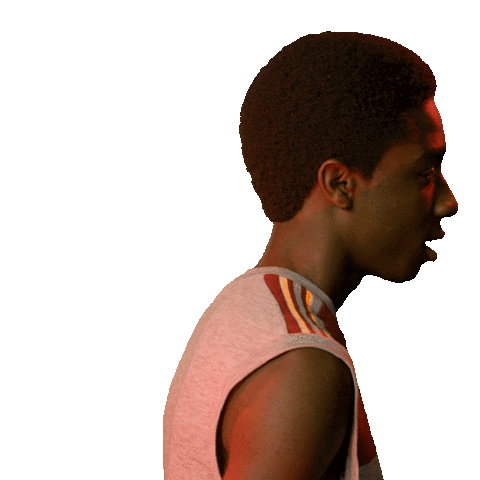
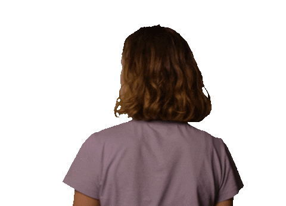
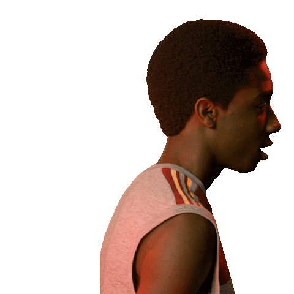
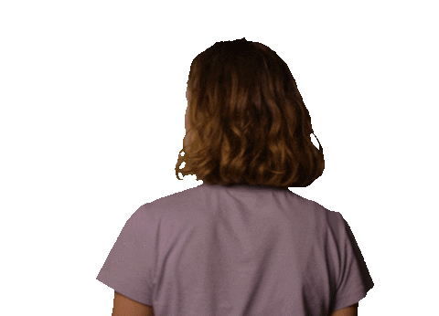

| It is November 16, 1983 in Hawkins, Indiana. Inside Hawkins National Laboratory, a scientist bursts out a door, running from something that isn't there. He runs to the elevator, tapping the floor button repeatedly, looking back and forth. He then gets in and taps the button again. He looks forward then up slowly, as he hears and sees something that we can't see. He is then pulled up as the elevator doors close, yelling loudly. We then see the Wheeler residence, as four friends--Mike Wheeler, Will Byers, Dustin Henderson, and Lucas Sinclair--play Dungeons & Dragons. We then see that the Demogorgon is played, as Will is pressured to cast Fireball. He rolls the die but it lands on the floor, with the group scrambling for it. Mike is then called by his mother, Nancy, to end the game. Meanwhile, the trio find it, but it is a 7, as only a 13 or higher can cast a Fireball, which means Will was eaten. Will then leaves, after telling Mike that it was a 7. Will rides his bike through the woods, passing by Hawkins Laboratory. He then sees something weird in front of him, as he accidentally falls down a steep hill and crashes. He then abandons his bike and runs to his house. He unlocks the back door to find nobody home, as the thing out back is probably chasing him. He tries to call his parents, but only weird breathing is heard. Something then unlocks the bolt on the door. Will then runs to the shed in the backyard, where he sees the thing. The light glows brightly and then fades, revealing no one there anymore. The next morning, November 17, Police Chief Jim Hopper wakes up shirtless. He then walks outside, enjoying the view and then prepares for work, smoking a cigarette. He then leaves. Will's mother, Joyce, and his brother, Jonathan, are arguing about if Will ever came home. It is then revealed that both were working; Jonathan took the night shift. Joyce then calls Nancy, and then asks if Will went home, she replies that he left around 8:00. They all conclude, including his friends, that Will probably left to go to school early. As they arrive, the trio are then bullied by Troy, the class bully, and an accomplice. Dustin is then picked on because of his condition, cleidocranial dysplasia, and his ability to flex bone. Lucas and Mike then acknowledge his ability. Two students, Nancy Wheeler, Mike's sister, and Barbara Holland, Nancy's friend, then discuss before school. Right after, Nancy's boyfriend, Steve, and she start making out in the bathroom. Nancy has to leave, while Steve asks if she would like to go anywhere, but she declines, having to study for her test. He then asks to come over at 8 pm, to which she reluctantly agrees. | Hopper then arrives at the police station. The assistant, Flo, tells Hopper that Joyce can't find her son. Drunk, he ignores Flo, but goes anyway. He then types a police report on Will, labeling him as "missing." Joyce and Hopper don't instantly find a solution, as Joyce is trying to engage with him in a conversation, while Hopper is being unreliable. Three people then arrive at the Laboratory, where they are greeted by Dr. Martin Brenner, one of the Lab's key scientists. The four then put on hazmat suits, and go down the elevator to a dark room. While looking, they see black roots and flesh-like substances on the walls. They then come across a giant flesh-root substance on the wall. One of them asks about a girl; Brenner replies, "She can't have gone far." A girl wearing a hospital gown and with a shaved head is then seen walking through the forest, alone. She sees the owner of a restaurant walk out, and decides to go there. She enters without notice, but as soon as she eats the food, the owner comes and tries to stop her, but is surprised. Hawkins Middle School then ends. Dustin, Lucas, and Mike then ask one of the teachers, Scott Clarke, if the Heathkit Ham Shack radio had arrived. He says yes, due to them being prime members of the AV club. A school staff member then asks for them, as they are being questioned for the disappearance of Will. They are told to not investigate, for their safety. Joyce then goes to look for Will at his fort in the forest, Castle Byers. She then remembers getting him tickets to see the 1982 film Poltergeist. But in reality, he is nowhere there at all. Jonathan is there looking for him as well, both calling out to him. Meanwhile, the restaurant owner feeds the mysterious girl. He asks him if she escaped, to no answer. He then takes the food and asks her for her name, she replies "Eleven" after he asks what the tattoo "011" means. He then gives back the food and calls authorities to identify her. She then sees a fan and consciously stares at it; it stops. Hopper and his team then find Will's bike where it was, exactly in the same position. Brenner and others are then shown at the Laboratory tapping in on conversations. We then switch to Joyce trying to reach her ex-husband, Lonnie, but his girlfriend, Cynthia, answers and hangs up. She then calls a neighbor, but the answering machine beeps. Hopper then arrives and gives them Will's bike, and he reveals evidence that Will came home. The family dog then barks at the shed, while Hopper investigates. He finds something behind a shelf, and the light blinking until one of his deputies come in, scaring Hopper. He then announces a search party for them to announce to the citizens. Mike and his family start fighting over investing for Will, but his family says "No" by default, but his father enrages him and his mother, Karen. |
| Mike and Lucas then discuss over the comm radios that they have. Mike suggests that Will might've put himself in danger to protect the trio, instead of protecting them, leading to apparent sacrifice. Lucas and Mike then resolve to meet each other at 10. While Mike leaves, he sees Steve climbing the window to Nancy's bedroom, with her soon closing it. The owner, Benny Hammond, and 011 then exchange a little conversation, before Agent Connie Frazer, disguised as though she is from Social Services, arrives. 011, looking from a distance, sees Frazer shoot Benny in the head, killing him. She then kills two agents and escapes through the back door. Dustin, Lucas, and Mike are then going down the back road, Mirkwood. They cross the restricted area of the woods, with Mike telling Dustin to stay on channel 6, and to not do anything stupid. Steve and Nancy are then shown studying, with him reading index cards that Nancy needs to give answer to. Steve then suggests to strip off clothing for each one if Nancy gets it correct/incorrect. After she answers one wrong, they make out again on the bed, with Nancy asking if he was in it just for sex. He replies no, and then jokes around before getting back to studying. Joyce and Jonathan are then back at home on a bed, mourning over Will and his disappearance. Jonathan then remorsefully regrets that he should've been there for Will, which she tells him not to worry about it because it is not his fault. She then gets a mysterious phone call from, what we believe, Will, but it shorts out after she asks the unknown caller, "What have you done to my boy?", to which there is no one on the phone. They then try to console each other. Dustin, Lucas, and Mike then are shown going through the forest. They hear rustling and then see 011, to their surprise. They decide to take her to Mike's house, where they ask her miscellaneous questions. Mike then observes that she is scared and cold. She tries to change out of her wet shirt, but the trio are disgusted because of gender. Mike directs her to the bathroom, where she changes. Dustin and Lucas thinks she is paranoid, but Mike stays sane, telling them to keep it a secret. Mike then offers 011 a sleeping bag, where he nicknames her "El." They both then sleep. On November 18, Joyce and Jonathan discuss xeroxing a missing poster for Will when Hopper arrives, telling Joyce that Will hasn't been found, to her anger. She discusses the "phone call," with Hopper dismissing it as a prank albeit her pleads. Jonathan offers to go to Lonnie's instead of Hopper, but he says no instantly. Mike then tells El to get help, but she says no and implies "bad people" who want to kill her. Brenner then listens to Joyce's 9-1-1 call; the search party is still unsuccessfully looking. Steve then invites Nancy for a party, to which she agrees, but they react toxic toward Jonathan and Will. | Dustin and Lucas, at school, don't see Mike, staying home to look after El. Jonathan, putting on The Clash's "Should I Stay or Should I Go?", remembers him and Will listening to it as he drives to Lonnie. Joyce, however, buys a new phone for free due to Jonathan having her money. A handyman, an agent for the Laboratory, verifies that the Byerses aren't home, as they see ooze dripping from the shed's walls. Meanwhile, while Max is showing her Yoda, El remembers being locked by Brenner into solitary confinement, with her calling him "Papa," confirming that she is the girl that he and others talked about before. She also recognizes Will when Mike shows her a picture of him. Meanwhile, Joyce sets up the new phone and waits for another call. Hopper investigate Benny's death, placed falsely like a suicide. Meanwhile, Jonathan visits Lonnie, confirming that Will is not there but that he is drunk. Jonathan angrily gives him the missing poster for Will due to his arrogance and drunk behavior. Lucas and Dustin angrily attempt to tell Karen about El after finding out that he spent all day with her, but she locks the door without arms, revealing her psychokinesis as well as a nosebleed. Hopper goes to the station to talk to the customer that was there when 011 arrived, he gives slight information but not enough to consider it other than a suicide, but he gives information on El, which Hopper mistakes for Will. Meanwhile, Karen and family, along with Mike, Dustin, and Lucas all have dinner. They are acting weirdly to contain the powerful surprise that kept them in. El then walks by, when Karen hears something, but Dustin fakes a spasm to successfully draw attention away. Meanwhile, the search party looks for Will, mistakenly for El, where they find the tag of El's hospital gown in one of the Laboratory's drain pipes. They then find the fence of the Lab. El, playing with Mike's radio, is given leftovers by Mike, where he gives the definition of friend, and a spit swear by Lucas. Barbara and Nancy then arrive at Steve's house, but Barbara is suspicious since two of Steve's "friends" had sex since seventh grade. Hopper wonders suspiciously about the events: The last missing person was in summer '23 and last suicide was in fall '61, long ago. El, later that night, tells them that Will is somewhere else, hiding from something terrible, characterized by the Demogorgon. Jonathan, with his camera, takes pictures of the scene near Will's bike. He hears screaming; he runs to find Steve and the others drinking and swimming, taking pictures of it, including Nancy having sex with Steve. Joyce then gets another "call" from Will, but it shorts again. "Should I Stay or Should I Go?" then starts playing in the house, with Joyce believing it a message, encountering something trying to go through the wall, but returns when music plays. Barbara, having cut her hand with a drop of blood in the water, is then taken by something outside, leaving nothing. |
 Vecna, AKA Henry Creel (Jamie Campbell Bower and Raphael Luce), is a human who transformed into a monster when banished to the Upside Down by Eleven. He is covered in gross, raw-looking flesh and monstrous tentacles. Vecna is responsible for several mysterious murders during the fourth season.
Vecna, AKA Henry Creel (Jamie Campbell Bower and Raphael Luce), is a human who transformed into a monster when banished to the Upside Down by Eleven. He is covered in gross, raw-looking flesh and monstrous tentacles. Vecna is responsible for several mysterious murders during the fourth season. The big villain of seasons two and three is a tentacled shadow monster that attacks physically and can also possess and control its victims. In season 2, the Mind Flayer’s growing control over Will Byers (Noah Schnapp) was the season's central plot point. They were eventually able to defeat him.
The big villain of seasons two and three is a tentacled shadow monster that attacks physically and can also possess and control its victims. In season 2, the Mind Flayer’s growing control over Will Byers (Noah Schnapp) was the season's central plot point. They were eventually able to defeat him. The spider monster is a disgusting, fleshy, spider-shaped monster of sheer horror. It was created to act as a physical body for the part of the Mind Flayer that had been trapped in Hawkins after the closure of the Gate. It's sent after Eleven and her friends in season 3 as a weapon of the Mind Flayer
The spider monster is a disgusting, fleshy, spider-shaped monster of sheer horror. It was created to act as a physical body for the part of the Mind Flayer that had been trapped in Hawkins after the closure of the Gate. It's sent after Eleven and her friends in season 3 as a weapon of the Mind Flayer The original monster of Stranger Things, the Demogorgon, was the first horror from the Upside Down seen in Hawkins in season 1. The monster is a tall, humanoid creature with a gaping, terrifying mouth in place of a face. It also possesses some supernatural abilities, such as telekinesis.
The original monster of Stranger Things, the Demogorgon, was the first horror from the Upside Down seen in Hawkins in season 1. The monster is a tall, humanoid creature with a gaping, terrifying mouth in place of a face. It also possesses some supernatural abilities, such as telekinesis.
 


